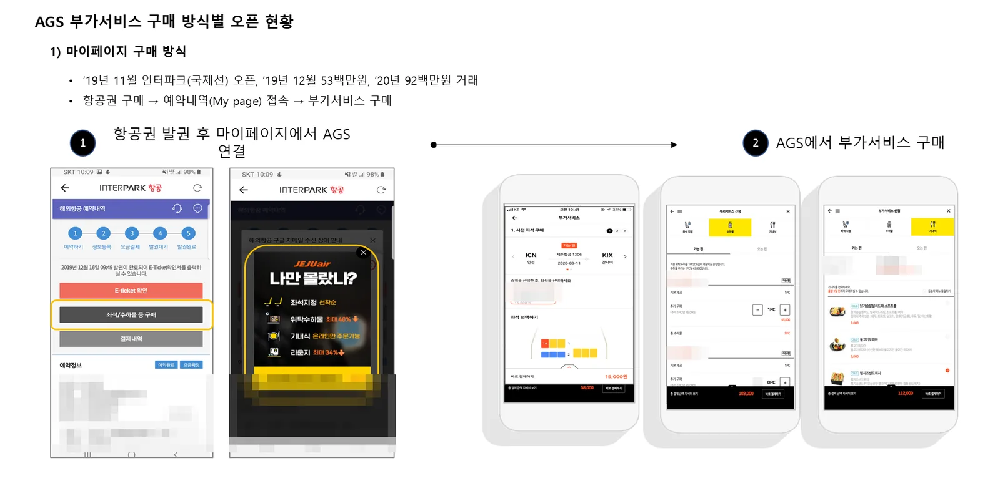
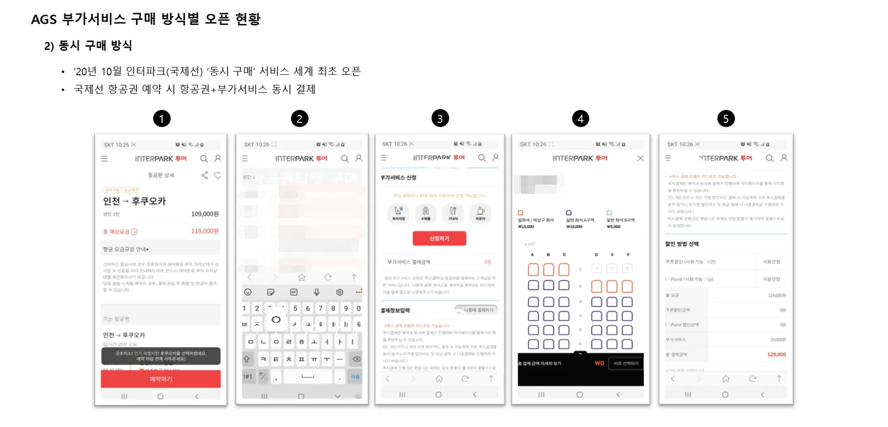
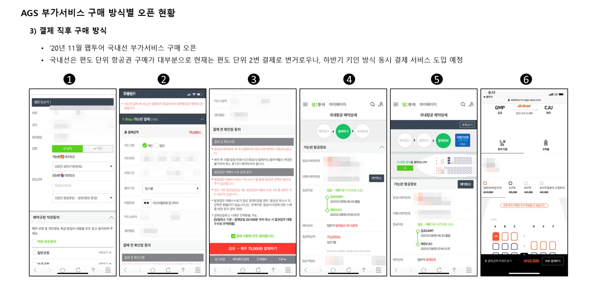

① 마이페이지 구매
항공권을 발권한 뒤 예약내역(마이페이지)에서 '좌석/수하물 구매' 버튼을 누르면 올윈에어 부가서비스 화면으로 연결됩니다. 2019년 11월 인터파크 국제선에서 처음 열었고, 오픈 다음 달인 2019년 12월 거래액 5,300만 원, 2020년 1월 9,200만 원을 기록했습니다.

② 동시 구매
항공권을 예약하는 흐름 안에서 좌석·수하물·기내식을 함께 고르고, 항공권과 부가서비스를 한 번에 결제합니다. 2020년 10월 인터파크 국제선에서 오픈했습니다.

③ 결제 직후 구매
항공권 결제가 끝난 화면에서 '더 편한 좌석을 원하십니까?'라고 제안하고 바로 좌석·수하물 구매로 이어집니다. 2020년 11월 웹투어 국내선에서 오픈했습니다.

얼마나 사는가: 초기 운영 실적
56.1%국제선 구매전환율 (구매 개수 ÷ 접속자 수)
25.2%국내선 구매전환율
15.6%국제선 결제전환율 (결제 건수 ÷ 접속자 수)
1~2%일반 전자상거래 구매전환율 (비교)
| 구분 | 국제선 (2019.11~2021.04) | 국내선 (2020.11~2021.04) |
|---|---|---|
| 결제전환율 | 15.6% | 11.3% |
| 구매전환율 (전체) | 56.1% | 25.2% |
| · 좌석지정 | 37.4% | 24.8% |
| · 수하물 | 9.5% | 0.4% |
| · 기내식 | 8.7% | — |
| 결제 건당 객단가 | 72,214원 | 14,259원 |
| 결제 건당 구매 개수 | 3.6개 | 2.2개 |
올윈에어 AGS 초기 운영 실적 (국제선 2019.11~2021.04, 국내선 2020.11~2021.04). 이미 항공권을 산 고객에게 필요한 상품을 제안하기 때문에 일반 전자상거래보다 전환율이 크게 높습니다.
자주 묻는 질문
- 판매처는 어떤 판매 방식을 선택해야 하나요?
- 세 가지를 함께 쓸 수 있습니다. 예약 중 동시 구매로 첫 구매를 만들고, 결제 직후 제안과 마이페이지 구매로 놓친 고객을 다시 잡는 방식을 권합니다.
- 올윈에어 부가서비스의 구매전환율은 어느 정도인가요?
- 초기 운영 실적 기준 국제선 구매전환율(구매 개수 ÷ 접속자 수)은 56.1%, 국내선은 25.2%였습니다. 일반 전자상거래의 1~2%보다 크게 높습니다.
- 국내선과 국제선 모두 지원하나요?
- 네. 국제선과 국내선 모두 지원하며, 노선과 항공사에 따라 제공 상품이 다를 수 있습니다.
올윈에어와 연동을 시작하세요
항공사·부가서비스 공급사, 여행사·OTA·여행 플랫폼 모두 한 번의 연동으로 시작할 수 있습니다. 연동 방식과 일정은 제휴사 환경에 맞춰 협의합니다.
제휴 이메일partnership@allwin.co.kr
대표 연락처 (평일 09:00~18:00)1522-2284